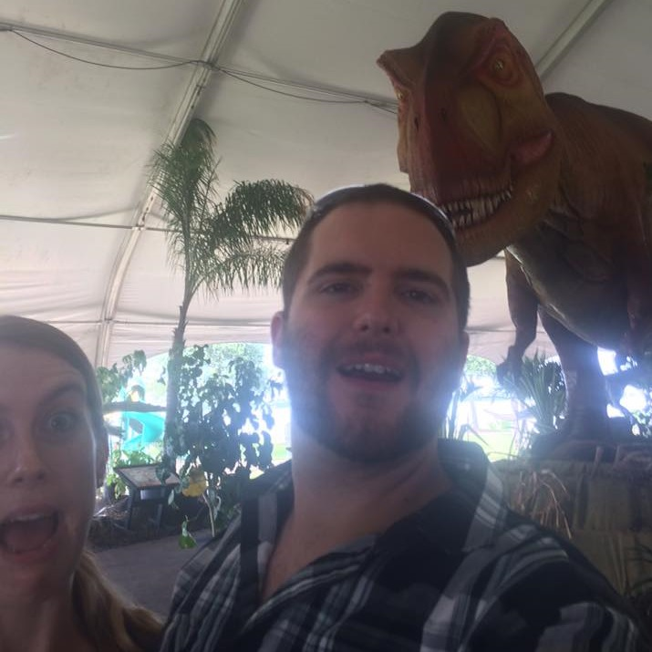

About Me
Hi! I am Cameron Walsh. Welcome to my page!
I was born and raised in Plymouth, MA. From there I left to attend Michigan State University. After graduating with a chemical engineering degree in 2012, I moved to Lafayette, LA to work for Baker Hughes, A GE Company. After almost 6 years of service in their Pressure Pumping department as a Field Engineer, I left the company so I could move to sunny Wauchula, FL and better take care of my family.
Currently, I'm back in school learning web development in UCF's Coding Bootcamp and will be looking for employment after. In the meantime, I spend my time exploring Florida and playing fetch with my 4 dogs. None of them have yet to give me the stick back. One eats them.
Connect With Me